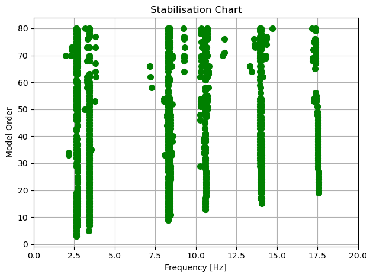
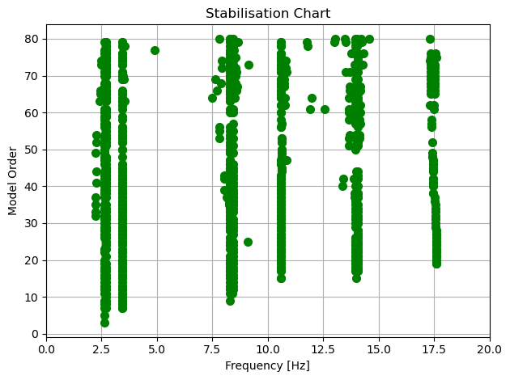
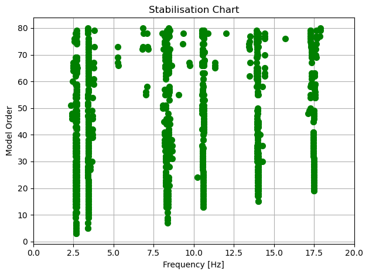
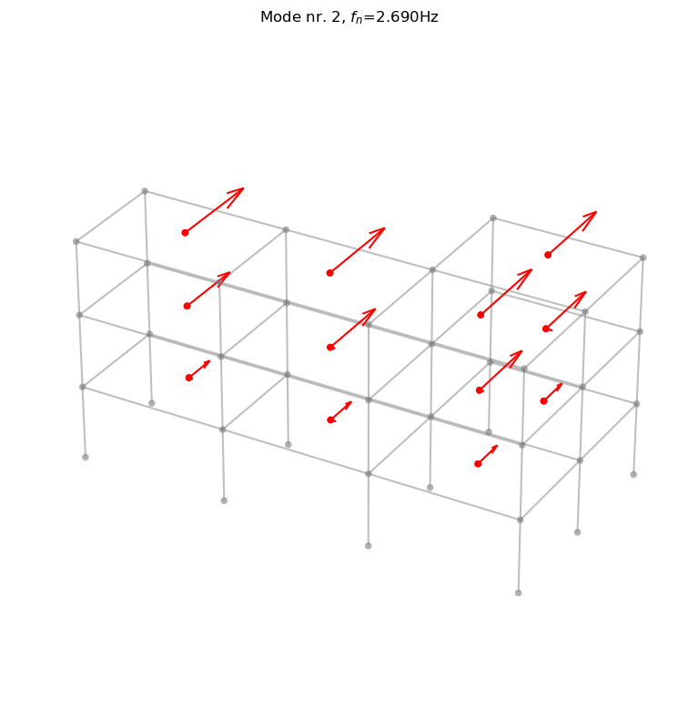
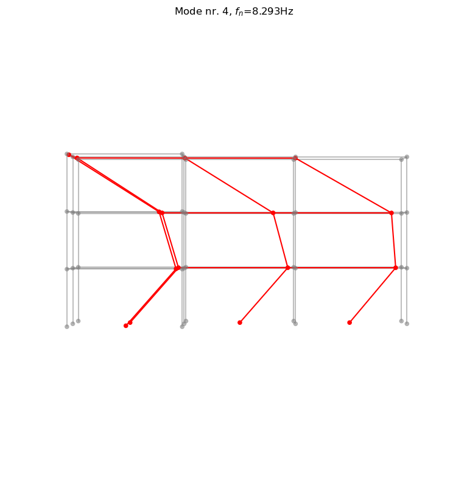

Example2_MultiSetupPoSER
[1]:
import os
import sys
# Add the directory we executed the script from to path:
sys.path.insert(0, os.path.realpath('__file__'))
import numpy as np
import pandas as pd
import matplotlib.pyplot as plt
from pyoma2.algorithm import FDD_algo,FSDD_algo,SSIcov_algo
from pyoma2.OMA import MultiSetup_PoSER, SingleSetup
For the poSER approach, after importing the necessary modules and data, we need to create as many single setup class instances as there are datasets available.
[2]:
# import data files
set1 = np.load("./src/pyoma2/test_data/3SL/set1.npy", allow_pickle=True)
set2 = np.load("./src/pyoma2/test_data/3SL/set2.npy", allow_pickle=True)
set3 = np.load("./src/pyoma2/test_data/3SL/set3.npy", allow_pickle=True)
The process for obtaining the modal properties from each setup remains the same as described in the example for the single setup.
[3]:
# create single setup
ss1 = SingleSetup(set1, fs=100)
ss2 = SingleSetup(set2, fs=100)
ss3 = SingleSetup(set3, fs=100)
# Detrend and decimate
ss1.decimate_data(q=2)
ss2.decimate_data(q=2)
ss3.decimate_data(q=2)
print(ss1.fs, ss2.fs, ss3.fs)
# Initialise the algorithms for setup 1
ssicov1 = SSIcov_algo(name="SSIcov1", method="cov_mm", br=50, ordmax=80)
# Add algorithms to the class
ss1.add_algorithms(ssicov1)
ss1.run_all()
# Initialise the algorithms for setup 2
ssicov2 = SSIcov_algo(name="SSIcov2", method="cov_mm", br=50, ordmax=80)
ss2.add_algorithms(ssicov2)
ss2.run_all()
# Initialise the algorithms for setup 2
ssicov3 = SSIcov_algo(name="SSIcov3", method="cov_mm", br=50, ordmax=80)
ss3.add_algorithms(ssicov3)
ss3.run_all()
# Plot stabilisation chart
ssicov1.plot_STDiag(freqlim=20)
ssicov2.plot_STDiag(freqlim=20)
ssicov3.plot_STDiag(freqlim=20)
ss1.MPE(
"SSIcov1",
sel_freq=[2.63, 2.69, 3.43, 8.29, 8.42, 10.62, 14.00, 14.09, 17.57],
order=50)
ss2.MPE(
"SSIcov2",
sel_freq=[2.63, 2.69, 3.43, 8.29, 8.42, 10.62, 14.00, 14.09, 17.57],
order=40)
ss3.MPE(
"SSIcov3",
sel_freq=[2.63, 2.69, 3.43, 8.29, 8.42, 10.62, 14.00, 14.09, 17.57],
order=40)
2024-02-01 16:46:20,454 - pyoma2.OMA - INFO - Running SSIcov1... (OMA:66)
50.0 50.0 50.0
2024-02-01 16:46:21,007 - pyoma2.functions.SSI_funct - INFO - SSI for increasing model order... (SSI_funct:256)
100%|███████████████████████████████████████████████████████████████████████████████| 81/81 [00:00<00:00, 10837.99it/s]
2024-02-01 16:46:21,254 - pyoma2.OMA - INFO - all done (OMA:61)
2024-02-01 16:46:21,255 - pyoma2.OMA - INFO - Running SSIcov2... (OMA:66)
2024-02-01 16:46:21,826 - pyoma2.functions.SSI_funct - INFO - SSI for increasing model order... (SSI_funct:256)
100%|███████████████████████████████████████████████████████████████████████████████| 81/81 [00:00<00:00, 12215.10it/s]
2024-02-01 16:46:22,054 - pyoma2.OMA - INFO - all done (OMA:61)
2024-02-01 16:46:22,055 - pyoma2.OMA - INFO - Running SSIcov3... (OMA:66)
2024-02-01 16:46:22,640 - pyoma2.functions.SSI_funct - INFO - SSI for increasing model order... (SSI_funct:256)
100%|███████████████████████████████████████████████████████████████████████████████| 81/81 [00:00<00:00, 11755.66it/s]
2024-02-01 16:46:22,924 - pyoma2.OMA - INFO - all done (OMA:61)
2024-02-01 16:46:23,158 - pyoma2.OMA - INFO - Getting MPE modal parameters from SSIcov1 (OMA:74)
2024-02-01 16:46:23,159 - pyoma2.functions.SSI_funct - INFO - Extracting SSI modal parameters (SSI_funct:580)
100%|██████████████████████████████████████████████████████████████████████████████████| 9/9 [00:00<00:00, 8962.19it/s]
2024-02-01 16:46:23,163 - pyoma2.OMA - INFO - Getting MPE modal parameters from SSIcov2 (OMA:74)
2024-02-01 16:46:23,164 - pyoma2.functions.SSI_funct - INFO - Extracting SSI modal parameters (SSI_funct:580)
100%|██████████████████████████████████████████████████████████████████████████████████| 9/9 [00:00<00:00, 9007.10it/s]
2024-02-01 16:46:23,168 - pyoma2.OMA - INFO - Getting MPE modal parameters from SSIcov3 (OMA:74)
2024-02-01 16:46:23,168 - pyoma2.functions.SSI_funct - INFO - Extracting SSI modal parameters (SSI_funct:580)
100%|██████████████████████████████████████████████████████████████████████████████████| 9/9 [00:00<00:00, 8992.08it/s]



After analyzing all datasets, the MultiSetup_PoSER class can be instantiated by passing the processed single setup and the lists of reference indices. Subsequently, the merge_results() method is used to combine the results.
[4]:
# reference indices
ref_ind = [[0, 1, 2], [0, 1, 2], [0, 1, 2]]
# Creating Multi setup
msp = MultiSetup_PoSER(ref_ind=ref_ind, single_setups=[ss1, ss2, ss3])
# Merging results from single setups
result = msp.merge_results()
# dictionary of merged results
res_ssicov = dict(result[SSIcov_algo.__name__])
result["SSIcov_algo"].Fn
2024-02-01 16:46:23,648 - pyoma2.OMA - INFO - Merging SSIcov_algo results (OMA:552)
2024-02-01 16:46:23,650 - pyoma2.OMA - INFO - Merging SSIcov1 results (OMA:558)
2024-02-01 16:46:23,650 - pyoma2.OMA - INFO - Merging SSIcov2 results (OMA:558)
2024-02-01 16:46:23,651 - pyoma2.OMA - INFO - Merging SSIcov3 results (OMA:558)
C:\Users\dpa\OneDrive - Norsk Treteknisk Institutt\Dokumenter\Dev\pyOMA2\src\pyoma2\functions\Gen_funct.py:77: ComplexWarning: Casting complex values to real discards the imaginary part
merged_mode_shapes[:, k] = merged_mode_k
[4]:
array([ 2.63245926, 2.69030811, 3.4256547 , 8.29328508, 8.42526299,
10.60096486, 13.99307818, 14.09286017, 17.46931459])
Once the class has been instantiated we can define the “global” geometry on it and then plot or animate the mode shapes
[5]:
# import geometry files
# Names of the channels
Names = [
["ch1_1","ch2_1","ch3_1","ch4_1","ch5_1","ch6_1","ch7_1","ch8_1","ch9_1","ch10_1"],
["ch1_2","ch2_2","ch3_2","ch4_2","ch5_2","ch6_2","ch7_2","ch8_2","ch9_2","ch10_2"],
["ch1_3","ch2_3","ch3_3","ch4_3","ch5_3","ch6_3","ch7_3","ch8_3","ch9_3","ch10_3"]]
# Background
BG_nodes = np.loadtxt("./src/pyoma2/test_data/3SL/BG_nodes.txt")
BG_lines = np.loadtxt("./src/pyoma2/test_data/3SL/BG_lines.txt").astype(int)
# Geometry 1
sens_coord = pd.read_csv("./src/pyoma2/test_data/3SL/sens_coord.txt", sep="\t")
sens_dir = np.loadtxt("./src/pyoma2/test_data/3SL/sens_dir.txt")
# Geometry 2
sens_lines = np.loadtxt("./src/pyoma2/test_data/3SL/sens_lines.txt").astype(int)
pts_coord = pd.read_csv("./src/pyoma2/test_data/3SL/pts_coord.txt", sep="\t")
sens_map = pd.read_csv("./src/pyoma2/test_data/3SL/sens_map.txt", sep="\t")
sens_sign = pd.read_csv("./src/pyoma2/test_data/3SL/sens_sign.txt", sep="\t")
# Define geometry1
msp.def_geo1(
Names, # Names of the channels
sens_coord, # coordinates of the sensors
sens_dir, # sensors' direction
bg_nodes=BG_nodes, # BG nodes
bg_lines=BG_lines,) # BG lines
# Define geometry 2
msp.def_geo2(
Names, # Names of the channels
pts_coord,
sens_map,
order_red="xy",
sens_sign=sens_sign,
sens_lines=sens_lines,
bg_nodes=BG_nodes,
bg_lines=BG_lines)
# Plot the geometry
#msp.plot_geo2(scaleF=2)
# define results variable
algoRes = result[SSIcov_algo.__name__]
# Plot mode 2 (geometry 1)
msp.plot_mode_g1(
Algo_Res=algoRes, Geo1=msp.Geo1, mode_numb=2, view="3D", scaleF=2)
# Animate mode 3 (geometry 2)
msp.plot_mode_g2(
Algo_Res=algoRes, Geo2=msp.Geo2, mode_numb=4, view="xz", scaleF=3)
[5]:
(<Figure size 800x800 with 1 Axes>,
<Axes3D: title={'center': 'Mode nr. 4, $f_n$=8.293Hz'}>)


[6]:
algoRes.Fn
[6]:
array([ 2.63245926, 2.69030811, 3.4256547 , 8.29328508, 8.42526299,
10.60096486, 13.99307818, 14.09286017, 17.46931459])